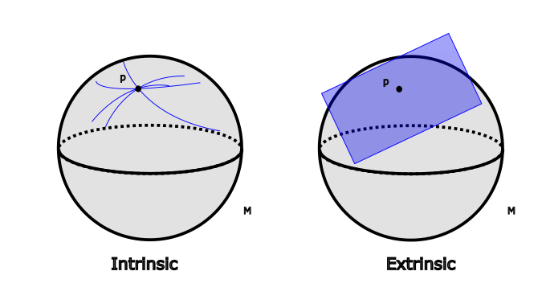

3 Tangent Spaces
Lead Question: What is the velocity of a curve \gamma at point p?
3.1 Velocities
Definition: Let (\mathcal{M},\mathcal{O},\mathscr{A}) be a smooth manifold with a curve \gamma:\mathbb{R}\to\mathcal{M} at least C^1. Suppose that \gamma(\lambda_0) = p. The velocity of \gamma at p is the linear map1 \begin{align} \mathscr{v}_{\gamma,p}&:C^{\infty}(\mathcal{M})\xrightarrow{\sim}\mathbb{R} \\ f&\mapsto \mathscr{v}_{\gamma, p}(f) := (f\circ \gamma)'(\lambda_0) \end{align}
1 Your ill-definition alarm bells should be ringing. In the end, there should be no dependence on the choice of chart of we’ve done something wrong.
Loose idea: The equivalence with what you’ve probably seen in the past is that previously we thought of the gradient as v^i(\partial_i f) where v^i is the vector we’ve dotted into the gradient \partial_i f. All we are doing now is reinterpretting as (v^i\partial_i)f where the only shift in philosophy is that we now think of the linear map v^i\partial_i acting on the function f. Thus, vectors in differential geometry survive as the directional deriviatves that they induce. However, if we know how these operators act on any function, we may apply them to the coordinate functions in particular to re-obtain our previous notion of the vector components.
3.2 Tangent Vector Space
Definition For each point p\in\mathcal{M}, we define the set T_p\mathcal{M} as the “tangent space to \mathcal{M} at p”, i.e. \begin{equation} T_p\mathcal{M} := \left\{ \mathscr{v}_{\gamma, p} | \gamma \text{ smooth curves through } p \right\} \end{equation}
Picture:

In Figure 3.1 we see two differing realizations of the tangent space. On the left, we show the tangent space as defined above from an intrinsic standpoint. On the right we see the manifold M embedded in a d+1 dimensional space so that T_p\mathcal{M} is a literal plane. While these views are technically equivalent, we choose the intrinsic view to be aesthetically superior.
Key observation: T_p\mathcal{M} can be equipped with a vector space structure. Immediately, we can add two elements from T_p\mathcal{M} pointwise: \begin{align} +&:T_p\mathcal{M}\times T_p\mathcal{M} \to \text{Hom}(C^{\infty}(\mathcal{M}), \mathbb{R})\\ (\mathscr{v}_{\gamma, p} + \mathscr{v}_{\delta, p})(f) &:= \mathscr{v}_{\gamma, p}(f) +_{\mathbb{R}} \mathscr{v}_{\delta, p}(f) \end{align} and likewise for s-multiplication. It remains to be shown that
- there actually exists a curve \sigma such that \mathscr{v}_{\gamma, p} + \mathscr{v}_{\delta, p} = \mathscr{v}_{\sigma, p}
- there actually exists a curve \tau such that \alpha \mathscr{v}_{\gamma, p} = \mathscr{v}_{\tau, p}
In other words, that we actually end up back in T_p\mathcal{M}. Let’s start with the proof for s-multiplication:
Let \tau: \mathbb{R}\to\mathcal{M} be defined such that \begin{equation} \lambda \mapsto \tau(\lambda) := \gamma(\alpha\lambda + \lambda_0) = (\gamma \circ \mu_\alpha)(\lambda_0) \end{equation} where \begin{align} \mu_\alpha&: \mathbb{R} \to \mathbb{R} \\ r &\mapsto \alpha r + \lambda_0 \end{align}
We see that \begin{align} \tau(0) &= \gamma(\alpha 0 + \lambda_0) = \gamma(\lambda_0) \\ \mathscr{v}_{\tau, p} &= (f\circ \tau)'(0) \\ &= (f\circ \gamma \circ \mu_\alpha)'(0) \\ &= (f\circ \gamma)'(\lambda_0)\cdot \alpha \\ &= \alpha \mathscr{v}_{\gamma, p} \end{align} where in the last line we used the chain rule.
Next, let’s try out the sum: \begin{align} \mathscr{v}_{\gamma, p} + \mathscr{v}_{\delta, p} &= \mathscr{v}_{\sigma, p} \end{align} We make a choice of chart (\mathcal{U}, x)2 so that \begin{align} \sigma&:\mathbb{R} \to \mathcal{M} \\ \sigma(\lambda) &:= x^{-1}\Big( (x\circ \gamma)(\lambda_0+\lambda) + (x\circ\delta)(\lambda_1 + \lambda) - (x\circ\gamma)(\lambda_0) \Big) \end{align}
2 Your ill-definition alarm bells should be ringing. In the end, there should be no dependence on the choice of chart of we’ve done something wrong.
We claim that this does the trick. First, let’s look at \sigma(0). We have \begin{align} \sigma(0) &= x^{-1}\Big( (x\circ\gamma)(\lambda_0) + (x\circ\delta)(\lambda_1) - (x\circ\gamma)(\lambda_0)\Big) \\ &= x^{-1}((x\circ\delta)(\lambda_1)) \\ &= \delta(p) \end{align}
so we confirmed that we hit the correct point. Now, let’s check that the velocity is correct: \begin{align} \mathscr{v}_{\sigma, p}(f) &= (f\circ\sigma)'(0) \\ &= (f\circ x^{-1} \circ x \circ \sigma)'(0) \\ &= (x^i\circ\sigma)'(0)\partial_i(f\circ x^{-1})(x(\sigma(0))) \\ &= (x^i\circ\sigma)'(0)\partial_i(f\circ x^{-1})(x(p)) \\ &= \Big[ (x^i\circ \gamma)'(\lambda_0)+ (x^i\circ\delta)'(\lambda_1)\Big]\partial_i(f\circ x^{-1})(x(p)) \\ &= (x^i\circ \gamma)'(\lambda_0)\partial_i(f\circ x^{-1})(x(p)) \\ &\qquad + (x^i\circ\delta)'(\lambda_1)\partial_i(f\circ x^{-1})(x(p)) \\ &= (f\circ\gamma)'(\lambda_0) + (f\circ\delta)'(\lambda_1) \\ &= \mathscr{v}_{\gamma, p}(f) + \mathscr{v}_{\delta, p}(f) \end{align}
Now we can confirm that the addition and s-multiplication on T_p\mathcal{M} do close thus proving that T_p\mathcal{M} is, in fact, a vector space.
3.3 Components of a Vector with respect to a Chart
Definition: Let (\mathcal{U}, x)\in \mathscr{A}. Let \gamma:\mathbb{R}\to\mathcal{M} be a curve with \gamma(0)=p. Then 3 \begin{align} \mathscr{v}_{\gamma, p}(f) &= (f\circ \gamma)'(0) \\ &= (f\circ x^{-1} \circ x \circ \gamma)'(0) \\ &= (x^i\circ\gamma)'(0)\partial_i(f\circ x^{-1})(x(p)) \end{align}
3 This formula appears frequently enough that it’s worth memorizing.
Because the term is very cumbersome, we use the notation \begin{equation} \partial_i(f\circ x^{-1})(x(p)) =: \left[\frac{\partial f}{\partial x^i}\right]_p \end{equation} This is not a standard partial derivative, but behaves the same. Note that f:\mathcal{M}\to\mathbb{R} is a function of the manifold for which we don’t have a notion of the partial derivative.
The first piece, we may rewrite as \begin{equation} (x^i\circ \gamma)(0) =: \dot\gamma_x^i(0) \end{equation} so that \begin{equation} \mathscr{v}_{\gamma, p}(f) = \dot\gamma_x^i(0)\left( \frac{\partial}{\partial x^i}\right)_p f \end{equation} Since this is true for all f\in C^{\infty}(\mathcal{M}) then in a chart we may understand this as the velocity vector \begin{equation} \vartheta_{\gamma, p} := \dot\gamma_x^i(0)\left(\frac{\partial}{\partial x^i}\right)_p \end{equation}
where we think of \left(\dfrac{\partial}{\partial x^i}\right)_p as the chart-induced-basis of T_p\mathcal{M}.
3.4 Chart-Induced Basis
Definition: If (\mathcal{U}, x)\in\mathscr{A}, then \begin{equation} \left(\frac{\partial}{\partial x^1} \right)_p, \left(\frac{\partial}{\partial x^2} \right)_p, ..., \left(\frac{\partial}{\partial x^d} \right)_p, \in T_p\mathcal{M} \end{equation} constitute a basis for T_p\mathcal{U}.
To show linear independence, we apply the ith vector to the jth component function
\begin{align} 0 = \lambda^i\frac{\partial}{\partial x^i} (x^j) &= \lambda^i\partial_i(x^j\circ x^{-1})(x(p)) \\ &= \lambda^i \delta^j_i \\ &= \lambda^j \end{align} Thus, these really do constitute a basis.
A corollary of this is that the dimension of T_p\mathcal{M} is \text{dim}(\mathcal{M}).
3.5 Change of Cector Components under a Change of Chart
NOTE: A tangent vector does not change because you decide to use a different chart. The components change.
Terminology: We will now write X\in T_p\mathcal{M} instead of the more cumbersome curve notation. We also may write \begin{equation} X = X^i\left(\frac{\partial}{\partial x^i} \right)_p \end{equation}
Let (\mathcal{U}, x), (\mathcal{V}, y) be overlapping charts with p\in\mathcal{U}\cap\mathcal{V}. Let X\in T_p\mathcal{M}. Then \begin{align} X &= X_{(x)}^i \left(\frac{\partial}{\partial x^i}\right) = X_{(y)}^i\left(\frac{\partial}{\partial y^i}\right)_p\\ \end{align} consider the following: \begin{align} \frac{\partial}{\partial x^i}f &= \partial_i(f\circ x^{-1})(x(p)) \\ &= \partial_i \left( f \circ y^{-1} \circ y \circ x^{-1}\right)(x(p)) \\ &= \partial_i(y^j \circ x^{-1})(x(p)) \cdot \partial_j(f\circ y^{-1})(y(p)) \\ &= \frac{\partial y^j}{\partial x^i}\cdot \frac{\partial f}{\partial y^j} \\ &= \left(\frac{\partial y^j}{\partial x^i}\right)\cdot \left(\frac{\partial }{\partial y^j}\right) f\\ \end{align}
Therefore, insertion into the previous equation yields \begin{align} X_{x}^i \frac{\partial y^j}{\partial x^i}\frac{\partial}{\partial y^j} &= X_{(y)}^j\frac{\partial}{\partial y^j} \\ X_{(y)}^j &= \left(\frac{\partial y^j}{\partial x^i} \right) X_{(x)}^i \end{align} which is exactly the transformation law for the components of a tangent vector X when we switch between two charts with coordinate functions x^i and y^j.
3.6 Cotangent Spaces
Given that we have T_p\mathcal{M}, it is natural to consider (T_p\mathcal{M})^*, i.e. the dual to the tangent space: \begin{equation} (T_p\mathcal{M})^* := \left\{\phi: T_p\mathcal{M}\xrightarrow{\sim} \mathbb{R} \right\} \end{equation}
Example: Consider f\in C^{\infty}(\mathcal{M}). Then \begin{align} (df)_p &: T_p\mathcal{M} \xrightarrow{\sim} \mathbb{R} \\ X &\mapsto (df)_p(X) := Xf \end{align}
i.e. (df)_p\in(T_p\mathcal{M})^*! This is called the gradient of f at p\in\mathcal{M}.
Further, we can calculate the components of the gradient… \begin{align} \left((df)_p\right)_j &:= (df)_p \left(\frac{\partial }{\partial x_j}\right)_p \\ &= \left( \frac{\partial f}{\partial x^j} \right)_p \end{align}
Upshot: The gradient of a function is not a vector, it’s a covector!
Theorem: Consider the chart (\mathcal{U}, x) so that we have coordinate maps x^i:\mathcal{U}\to\mathbb{R}. The claim is \begin{equation} (d x^1)_p, (d x^2)_p, ..., (d x^d)_p \end{equation} is the dual basis for T_p^*\mathcal{M}. Observe: \begin{align} (d x^a)_p(\frac{\partial }{\partial x^b}) = \frac{\partial x^a}{\partial x^b} = \delta_b^a \end{align}
3.7 Change of components of a covector with respect to a change of chart.
Let \omega \in T_p^*\mathcal{M}, then \begin{align} \omega_{(y)j}(dy^j)_p &= \omega = \omega_{(x)i} (dx^i)_p \\ \Rightarrow \omega_{(y)i} &= \frac{\partial x^j}{\partial y^i}\omega_{(x)j} \end{align} 4
4 In the tutorial session, we will show that \frac{\partial x^i}{\partial y^j} is the matrix inverse to \frac{\partial y^m}{\partial x^n}